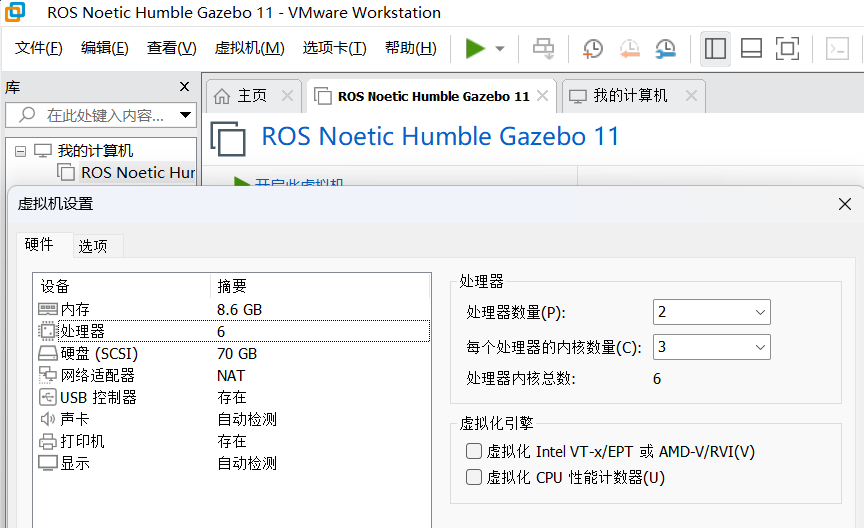
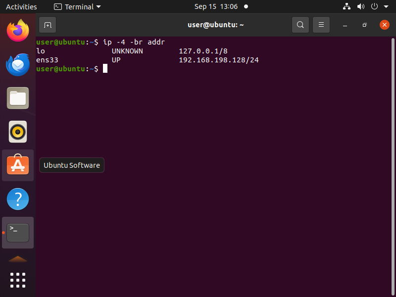
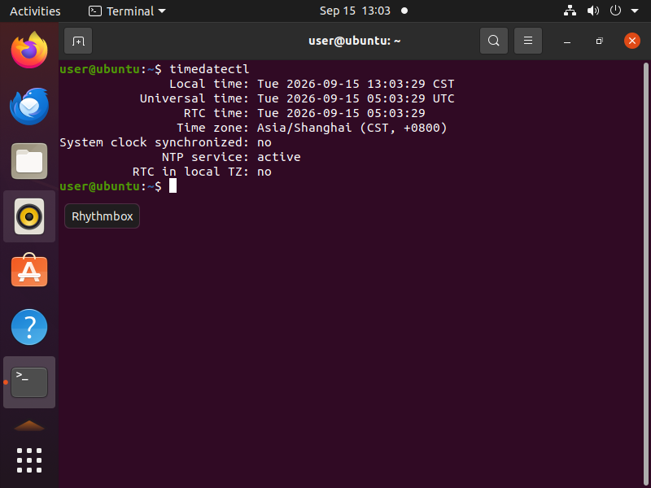
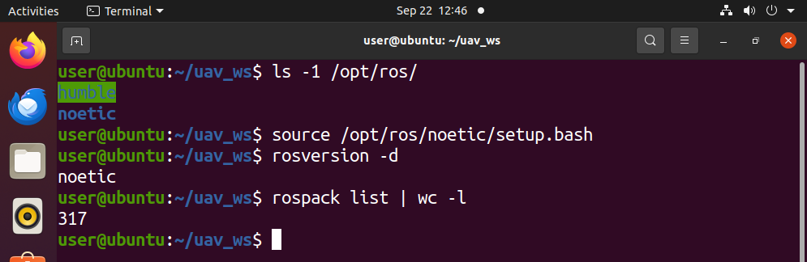
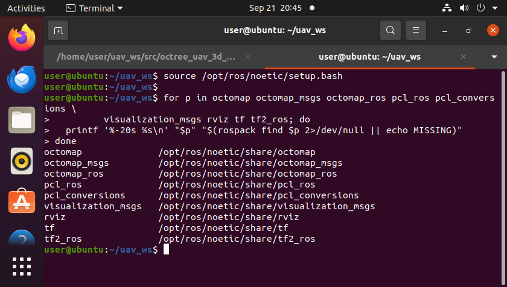
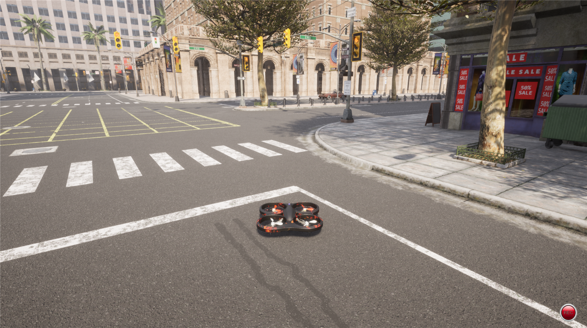
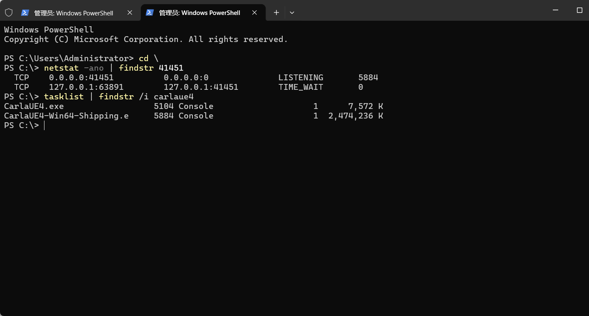
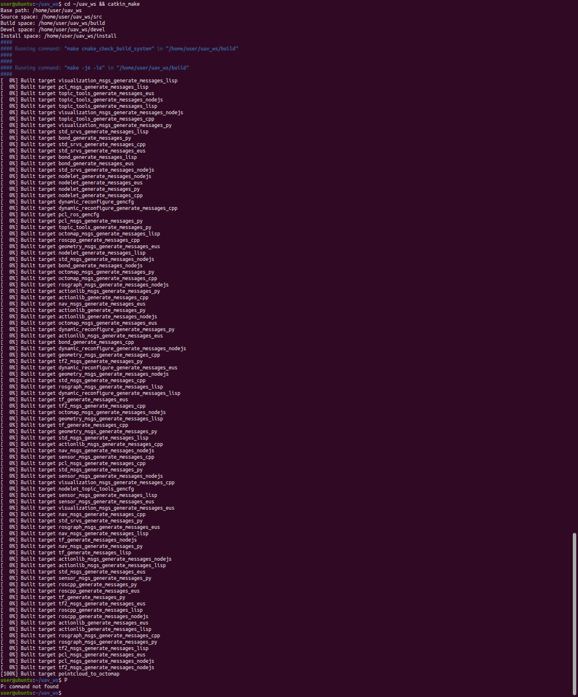
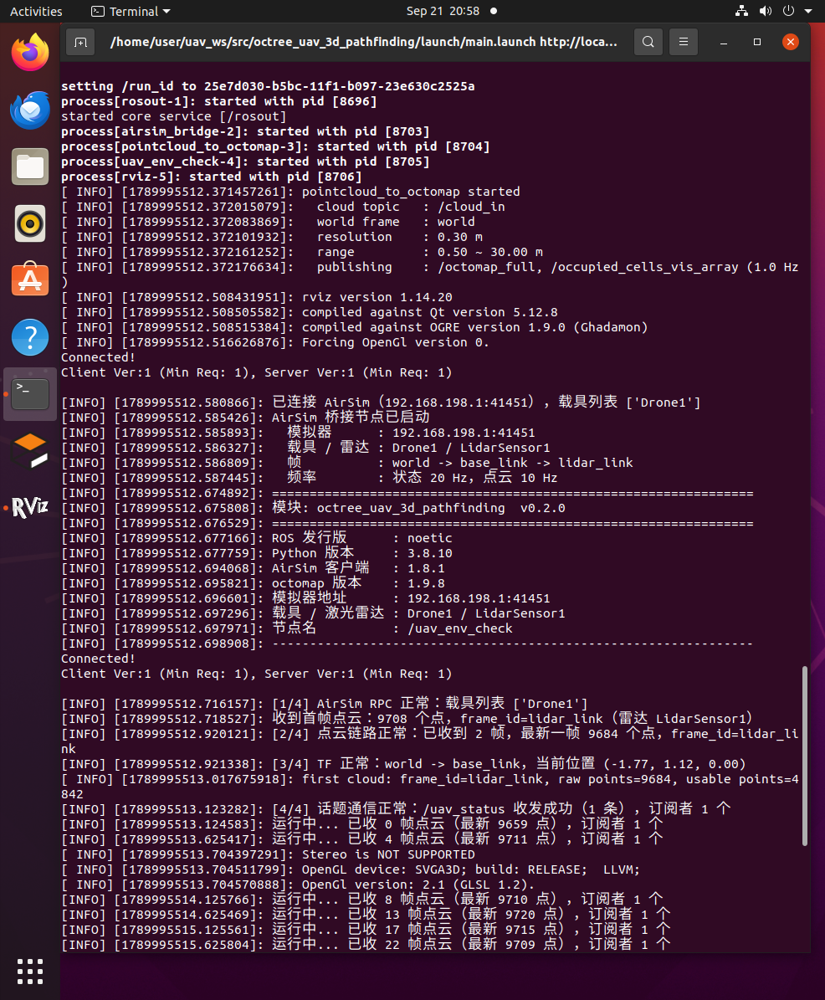

空域载具八叉树三维寻路的环境配置与前置准备
本文说明在本项目中搭建空域载具三维寻路开发环境所需的完整配置流程，包括虚拟机环境、 ROS 与 AirSim 模拟器的安装验证、octomap 三维地图依赖，以及工作空间的建立。
本项目采用"模拟器在宿主 Windows、ROS 在客户机 Ubuntu"的分工 —— 模拟器是 Windows/Unreal 程序，无法装进虚拟机。这一点决定了整个环境配置的形态，详见第 5 节。
1. 环境一览
| 位置 | 类别 | 项目 | 版本 |
|---|---|---|---|
| 宿主 | 操作系统 | Windows | 11 |
| 宿主 | 虚拟化平台 | VMware Workstation | 17.6.4 |
| 宿主 | 模拟器 | AirSim（随 OpenHUTB 发行版提供） | 1.8.1 |
| 客户机 | 操作系统 | Ubuntu | 20.04.6 LTS（内核 5.15） |
| 客户机 | 硬件配置 | 6 vCPU / 8 GiB 内存 / 70 GB 磁盘 | |
| 客户机 | ROS | Noetic（ROS 1） | 1.16.0 |
| 客户机 | 三维地图 | octomap | 1.9.8 |
| 客户机 | 点云库 | PCL | 1.10 |
| 客户机 | 构建工具 | catkin | 0.8.10 |
虚拟机可从零安装，也可使用预装 ROS 的镜像。本文以预装镜像 + 验证配置的方式说明。
2. 虚拟机配置
2.1 硬件配置建议
| 项目 | 建议值 | 说明 |
|---|---|---|
| CPU | ≥ 4 核 | RViz 与点云处理同时运行时的下限 |
| 内存 | ≥ 8 GB | 可视化 + 点云 + 八叉树 |
| 磁盘 | ≥ 40 GB 可用 | ROS 桌面版、octomap/PCL、catkin 编译产物 |
| 显卡 | 开启 3D 加速 | 否则 RViz 退化为软件渲染，帧率很低 |
| 网络 | NAT | 与宿主共享网络，便于访问软件源，也是连模拟器的前提 |
下图为 VMware 中该虚拟机的处理器与内存配置：

注意：模拟器本身不跑在虚拟机里，所以虚拟机的显卡性能只影响 RViz，不影响仿真质量。
2.2 虚拟网络与登录
虚拟机默认使用 NAT 模式，可通过 ip 命令查看地址：
# 查看虚拟机 IP 地址
ip -4 -br addr
# 输出示例：ens33 UP 192.168.198.128/24

记下你自己宿主机的 VMnet8 地址 —— 后面连模拟器要用它，不能用 127.0.0.1
（在客户机里 127.0.0.1 指向客户机自己，不是宿主）：
# 查看默认网关，宿主的 VMnet8 地址就在这个网段里
ip route | grep default
本文档实测环境中宿主是
192.168.198.1，但这是 VMware 的网段分配结果， 每台机器可能不同。下文出现的192.168.198.1请一律替换为你自己查到的地址。
3. 系统配置
3.1 时区与时间同步
虚拟机镜像的时区常常不是本地时区，且 VMware Tools 的时间同步可能被关闭。时间不准会导致日志时间戳混乱、多机通信异常，务必先修正：
# 设置为东八区
sudo timedatectl set-timezone Asia/Shanghai
# 启用网络时间同步
sudo timedatectl set-ntp true
# 确认：Time zone 为 Asia/Shanghai，System clock synchronized 为 yes
timedatectl

3.2 确认系统版本
# 确认发行版为 Ubuntu 20.04
lsb_release -a
cat /etc/os-release | head -3
uname -r
4. ROS 环境
4.1 确认 ROS 版本
本机同时存在两个 ROS 发行版，需明确各自路径：
# 查看已安装的 ROS 发行版
ls -1 /opt/ros/
本项目使用 ROS 1 Noetic。 注意两套环境不可同时 source，否则环境变量互相覆盖，rosversion、rospack 等命令会失效。
# 每次打开新终端后都要 source
source /opt/ros/noetic/setup.bash
# 验证：应输出 noetic
rosversion -d
# 查看可用包数量
rospack list | wc -l

4.2 检查关键依赖包
# 逐个检查三维寻路所需的包是否存在
for p in octomap octomap_msgs octomap_ros pcl_ros pcl_conversions \
visualization_msgs rviz tf tf2_ros; do
printf '%-20s %s\n' "$p" "$(rospack find $p 2>/dev/null || echo MISSING)"
done
| 包 | 用途 |
|---|---|
octomap / octomap_msgs / octomap_ros |
八叉树地图核心库与 ROS 消息 |
pcl_ros / pcl_conversions |
点云处理与格式转换 |
visualization_msgs |
占用体素的可视化消息 |
rviz |
三维可视化 |
tf / tf2_ros |
坐标变换 |
各包的实际检查结果：

与早期方案相比，这里不再需要
gazebo_ros/gazebo_plugins—— 模拟器换成了宿主上的 AirSim，与 ROS 之间走的是 RPC 而不是 Gazebo 插件。
5. 模拟器：AirSim 的启动与连接
这是本项目环境配置中最特殊的一步：模拟器不在虚拟机里。
5.1 为什么模拟器在宿主上
模拟器是 AirSim 1.8.1（随 OpenHUTB 低空模拟器 发行版提供）， 本质上是一个 Windows/Unreal 打包程序，无法安装到 Ubuntu 虚拟机内。
AirSim 的架构是"一个 RPC 服务端 + 任意多个客户端"，所以天然适合这种分工：
宿主 Windows ── RPC(41451) ──► 客户机 Ubuntu（ROS、我们的节点、RViz）
5.2 启动模拟器（宿主侧）
模拟器是解压即用的绿色发行版，解压到哪个目录都可以，但有一个硬性要求：
必须在模拟器的安装目录里启动它 —— 因为模拟器要读同目录下的 settings.json，
载具与激光雷达的配置就写在那里；从别处启动它会找不到配置文件，也就不会有激光雷达。
在 Windows 上进入该目录后运行 CarlaUE4.exe（或在资源管理器里直接双击它）：
cd <模拟器安装目录>
CarlaUE4.exe
安装目录里应该能看到这几项，可以用来自查：
<模拟器安装目录>\
CarlaUE4.exe ← 启动程序
settings.json ← AirSim 配置（载具、激光雷达）
CarlaUE4\ ← 程序资源
Engine\ ← 引擎
本文档不写死具体路径，因为每个人把发行版解压到哪里都不一样（放在哪个盘、 哪个目录都可以，不必和本文一致）。请以你自己的安装位置为准 —— 只要那个目录里有上面这几项就对了。
首次启动、以及第一次加载城市地图时，画面可能要等 30~60 秒才逐渐渲染出来，这是正常的。 启动完成后应能看到城市场景：

确认 AirSim 的 RPC 端口已经在监听：
netstat -ano | findstr 41451

如果这个端口不监听：说明模拟器没有进入 AirSim 的多旋翼模式。 需要检查模拟器包内的
Config/DefaultEngine.ini，把GlobalDefaultGameMode指向 AirSim（该发行版里已定义别名AIR→/Script/AirSim.AirSimGameMode）。 若仍不生效，直接写/Script/AirSim.AirSimGameMode。
5.3 放行防火墙（宿主侧）
Windows 防火墙默认拦截入站连接，必须显式放行 41451：
# 管理员 PowerShell
New-NetFirewallRule -DisplayName "AirSim RPC 41451" -Direction Inbound `
-Protocol TCP -LocalPort 41451 -Action Allow -Profile Any
一个很难查的坑：Windows 防火墙里显式 Block 规则优先于显式 Allow 规则。 如果某个程序第一次监听时弹过"是否允许通信"的窗口并被点了取消， 系统会自动建一条针对该程序的 Block 规则。此时按端口加 Allow 完全无效， 必须先把它禁用：
Get-NetFirewallRule | Where-Object { $_.DisplayName -match 'Carla|hutb|AirSim|41451' } | Select-Object DisplayName, Direction, Action, Enabled | Format-Table -AutoSize Set-NetFirewallRule -DisplayName "<那条 Block 规则的名字>" -Enabled False
5.4 安装 Python 客户端（客户机侧）
客户机要连 AirSim 的 RPC，需要装它的 Python 客户端：
# 注意顺序不能反！
pip3 install numpy
pip3 install msgpack-rpc-python
pip3 install airsim
为什么顺序不能反：
airsim的setup.py会import airsim自己， 而包内的types.py需要msgpackrpc。如果先装airsim，会在构建元数据阶段 就报ModuleNotFoundError: No module named 'msgpackrpc'。
5.5 验证连通性（客户机侧）
⚠️ 先确认前置条件：模拟器的
settings.json已经配好。 本节的测试用到载具名Drone1与雷达名LidarSensor1。 如果settings.json还没按 AirSim 载具与位置控制 第 2 节配好， 第 2 步会直接报错：listVehicles()返回的是['SimpleFlight']这类默认名， 紧接着getLidarData(lidar_name='LidarSensor1')就会抛RPCError。 请先配好再往下测。
第 1 步：测端口通不通
# 0 = 通
python3 -c "import socket;s=socket.socket();s.settimeout(2);print(s.connect_ex(('192.168.198.1',41451)))"
返回值的含义必须分清：
| 返回值 | 含义 | 处理 |
|---|---|---|
| 0 | 连通 | 继续第 2 步 |
| 11 | 连接超时 / 包被丢弃 | 是防火墙问题，回到 5.3 |
| 111 | 连接被拒绝 | 端口没人监听，模拟器没起来或没进 AirSim 模式 |
第 2 步：测能不能取到激光数据
python3 -c "
import airsim
c = airsim.MultirotorClient(ip='192.168.198.1', port=41451)
c.confirmConnection(); print('RPC OK', c.listVehicles())
d = c.getLidarData(lidar_name='LidarSensor1')
print('lidar points:', len(d.point_cloud)//3)
"
期望输出：RPC OK ['Drone1']，以及一个正的点数（本项目实测约 9700）。
如果载具列表不是 ['Drone1']，说明载具名对不上 —— 回到第 2 节
核对：settings.json 是否放在模拟器安装目录下、里面的载具名与雷达名是否写对了。
6. 建立工作空间与功能包
ROS 1 使用 catkin 构建系统。为避免与系统中已有的工作空间混杂，本项目建立独立工作空间：
# 建立工作空间
mkdir -p ~/uav_ws/src
cd ~/uav_ws/src && catkin_init_workspace
# 首次编译
cd ~/uav_ws && catkin_make
本模块的功能包为 octree_uav_3d_pathfinding，把它放到工作空间里即可：
# 将本模块放入 ~/uav_ws/src/
# 编译
cd ~/uav_ws && catkin_make
source devel/setup.bash
编译成功时，日志里会先列出工作空间中的包（-- ~~ traversing 1 packages），
最后以 Built target 结束 —— 后者出现即表示编译完成：
[ 50%] Building CXX object octree_uav_3d_pathfinding/CMakeFiles/pointcloud_to_octomap.dir/src/pointcloud_to_octomap.cpp.o
[100%] Linking CXX executable /home/user/uav_ws/devel/lib/octree_uav_3d_pathfinding/pointcloud_to_octomap
[100%] Built target pointcloud_to_octomap

本包的 C++ 节点依赖 octomap 的头文件与库，若编译报找不到
octomap/octomap.h：sudo apt install liboctomap-dev
7. 编译与运行验证
环境就绪后，编译并运行本模块的主入口，即可一次验证模拟器层与 ROS 层的整条链路。
⚠️ 运行前必须先改一个参数：
config/params.yaml里的host。 它默认写的是本项目实测环境的地址，每台机器都不一样，不改就会连不上模拟器 （表现是自检第 1 项报"无法连接 AirSim"）。# 1) 先查你自己宿主机的 VMnet8 地址（见第 2.2 节） ip route | grep default # 2) 再改 config/params.yaml，两组里的 host 都要改： # uav_env_check.host # airsim_bridge.host
# 载入工作空间环境
source ~/uav_ws/devel/setup.bash
# 启动桥接、点云建图、环境自检与 RViz
roslaunch octree_uav_3d_pathfinding main.launch
主入口的自检节点会依次输出运行环境信息（ROS 发行版、Python 版本、AirSim 客户端版本、 octomap 版本），并检查四项：AirSim RPC 连接、激光点云链路、TF 坐标变换、 话题通信。自检节点在数秒后自动退出，而仿真与桥接节点继续运行，便于进一步观察点云与飞行器的运动； 模块的完整说明与运行效果见源码目录下的 README.md。
四项检查全部通过时的输出如下：
[INFO] 模块: octree_uav_3d_pathfinding v0.2.0
[INFO] ROS 发行版 : noetic
[INFO] AirSim 客户端 : 1.8.1
[INFO] octomap 版本 : 1.9.8
[INFO] 模拟器地址 : 192.168.198.1:41451
[INFO] [1/4] AirSim RPC 正常：载具列表 ['Drone1']
[INFO] [2/4] 点云链路正常：已收到 1 帧，最新一帧 9669 个点，frame_id=lidar_link
[INFO] [3/4] TF 正常：world -> base_link，当前位置 (-1.77, 1.12, 0.00)
[INFO] [4/4] 话题通信正常：/uav/status 收发成功（1 条），订阅者 1 个
[INFO] 检查结果：
[INFO] [通过] AirSim RPC 连接
[INFO] [通过] 激光点云链路
[INFO] [通过] TF 坐标变换
[INFO] [通过] 话题通信
[INFO] 环境与链路自检全部通过，模块可以开始后续开发。
四项的实际运行结果：

详细的编译步骤与参数说明见模块源码目录下的 README.md。
参考
附：大模型使用声明
本文档及配套模块代码在编写过程中使用了 AI 大模型辅助（需求分析、方案讨论、代码与文档起草、问题排查）。全部内容已经过实际运行验证：环境配置步骤在 Ubuntu 20.04.6 + ROS Noetic + AirSim 1.8.1 环境下逐条执行确认，模块通过 roslaunch octree_uav_3d_pathfinding main.launch 运行并输出上述自检结果。作者对提交内容的正确性与完整性负全部责任。